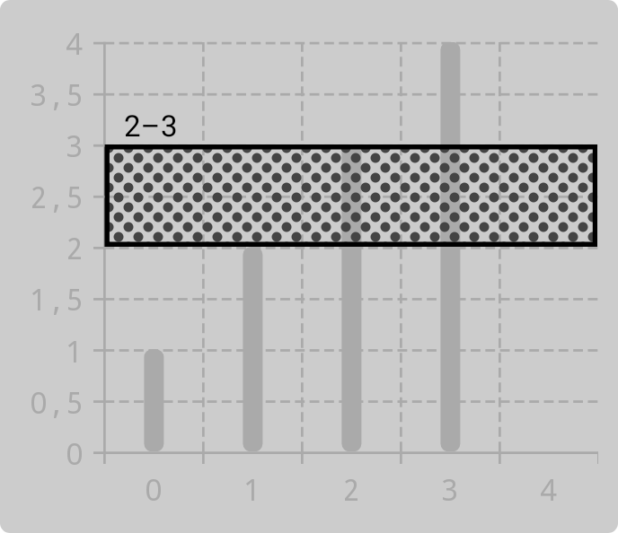
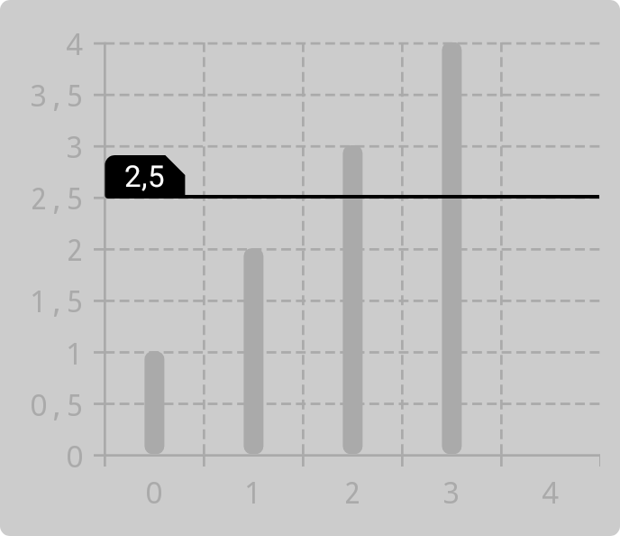
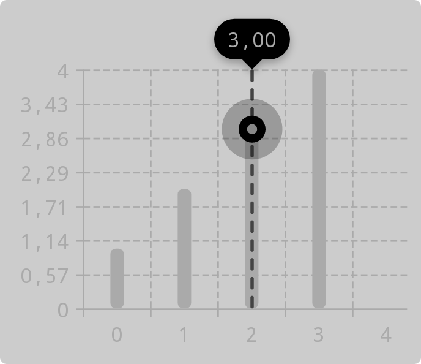

Decorations and markers
In addition to customizing charts, you can add decorations and markers to them.
Decorations
Decorations display an additional layer of data. They can be added to a chart as follows:
- In Jetpack Compose, use the
decorationsparameter ofcolumnChartandlineChart. - In the view system, use the
addDecoration,addDecorations,setDecorations,removeDecoration, andremoveDecorationsfunctions. These are accessible via thechartfield ofBaseChartView(which is extended byChartViewandComposedChartView).
Threshold lines
Threshold lines are horizontal lines or boxes that highlight a specific value or range of values. You can use them to mark averages, target values, and so on. To create a threshold line, use the ThresholdLine class. It has two constructors: one for a threshold line highlighting a single value, and another one for a threshold line highlighting a range of values.
Some examples:
-
a threshold line highlighting a range
ThresholdLine( thresholdRange = 2f..3f, lineComponent = ShapeComponent( color = Color.BLACK, strokeWidthDp = 2f, dynamicShader = ComponentShader( ShapeComponent(shape = Shapes.pillShape, color = Color.DKGRAY), componentSizeDp = 4f, ), ), labelComponent = textComponent(Color.Black).setPadding(horizontal = 8f), )
-
a threshold line highlighting a single value
ThresholdLine( thresholdValue = 2.5f, lineComponent = ShapeComponent( color = Color.BLACK, shape = Shapes.roundedCornerShape(bottomLeftPercent = 100), ), labelComponent = textComponent { color = Color.WHITE background = ShapeComponent( shape = CorneredShape( topLeft = Corner.Relative( percentage = 25, cornerTreatment = RoundedCornerTreatment, ), topRight = Corner.Relative( percentage = 50, cornerTreatment = CutCornerTreatment, ), ), color = Color.BLACK, ) }.setPadding(horizontal = 8f), minimumLineThicknessDp = 2f, )
Markers
Markers highlight the y value corresponding to a specific value on the x-axis. They can be shown when a chart is touched, or you can make them persistent. To create a marker, use the MarkerComponent class or create your own implementation of the Marker interface. A marker can be added to a chart as follows:
- In Jetpack Compose, use the
markerparameter of theChartcomposable to add a marker displayed when a chart is touched, and use thepersistentMarkersparameter ofcolumnChartandlineChartto add persistent markers. - In the view system, use use the
markerfield ofBaseChartViewto add a marker displayed when a chart is touched, and use theaddPersistentMarker,setPersistentMarkers, andremovePersistentMarkerfunctions to add and remove persistent markers. These functions are accessible via thechartfield ofBaseChartView(which is extended byChartViewandComposedChartView).
To listen to marker visibility changes, use MarkerVisibilityChangeListener:
- In Jetpack Compose, use the
markerVisibilityChangeListenerparameter of theChartcomposable. - In the view system, use the
markerVisibilityChangeListenerfield ofBaseChartView.
Below is an example of how a marker can be created. Also see getMarker in the sample app.
val labelBackgroundShape = MarkerCorneredShape(all = Corner.FullyRounded)
val label = textComponent {
color = Color.WHITE
padding = dimensionsOf(horizontalDp = 8f, verticalDp = 4f)
typeface = Typeface.MONOSPACE
background = ShapeComponent(shape = labelBackgroundShape)
.setShadow(
color = Color.BLACK.copyColor(alpha = 0.3f),
radius = SHADOW_RADIUS,
dy = SHADOW_DY,
applyElevationOverlay = true,
)
}
val indicator = OverlayingComponent(
outer = ShapeComponent(shape = pillShape, color = Color.BLACK.copyColor(alpha = 0.25f)),
innerPaddingAllDp = 10f,
inner = OverlayingComponent(
outer = ShapeComponent(shape = pillShape),
inner = ShapeComponent(shape = pillShape, color = Color.GRAY),
innerPaddingAllDp = 5f,
),
)
val guideline = LineComponent(
color = guidelineColor,
thicknessDp = 2f,
shape = DashedShape(shape = pillShape, dashLengthDp = 8f, gapLengthDp = 4f),
)
return object : MarkerComponent(
label = label,
indicator = indicator,
guideline = guideline,
) {
init {
indicatorSizeDp = INDICATOR_SIZE_DP
}
override fun getInsets(context: MeasureContext, outInsets: Insets) = with(context) {
outInsets.top = label.getHeight(this) + labelBackgroundShape.tickSizeDp.pixels +
SHADOW_RADIUS.pixels * SHADOW_RADIUS_TO_PX_MULTIPLIER - SHADOW_DY.pixels
}
}
